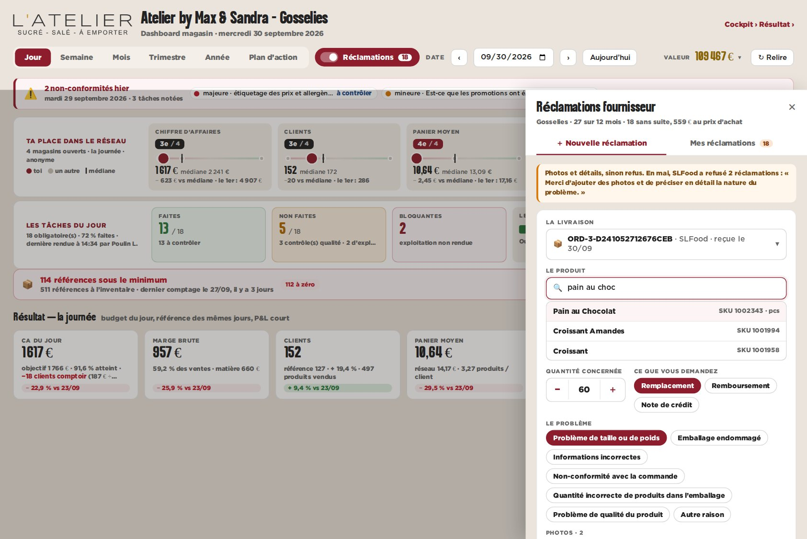
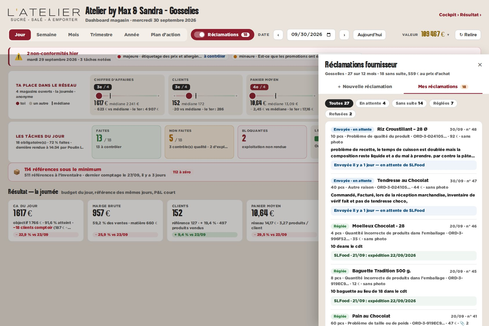
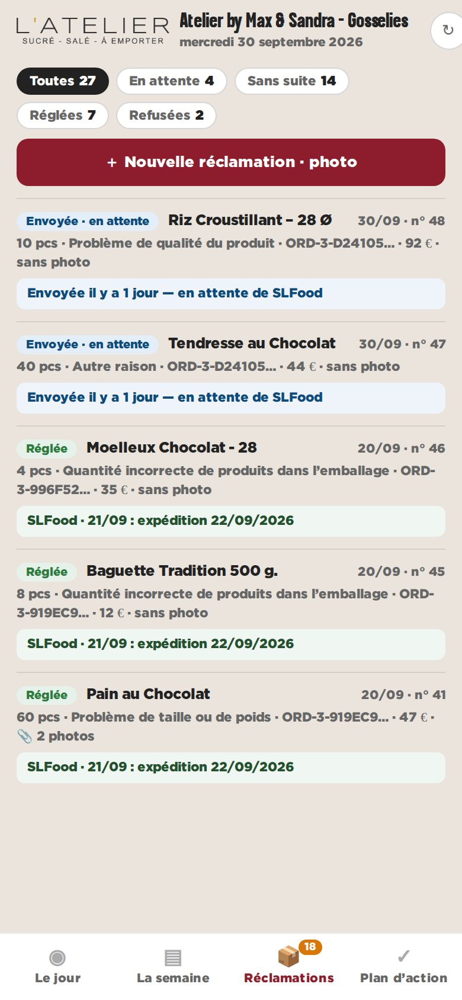

maquette · dashboard magasin · Gosselies · 27 réclamations réelles sur 12 mois (panel) · l’exemple de saisie est une illustration
A — Un interrupteur « Réclamations » qui ouvre un tiroir
Dans la barre du dashboard, un interrupteur « Réclamations » avec le nombre de réclamations sans suite. Il ouvre un tiroir à droite, deux onglets : « Nouvelle réclamation » (livraison, produit, quantité, motif, photos, note, envoi) et « Mes réclamations » (état, réponse du fournisseur, photos). Au téléphone : un quatrième onglet en bas.
Pour
- Toujours à un clic, sans quitter les chiffres.
- Tout le formulaire sur un écran : rapide pour qui connaît.
- Le compteur « sans suite » reste visible en permanence.
Contre
- Un formulaire long dans un tiroir étroit.
- Au téléphone, la photo passe après le formulaire.

bureau — nouvelle réclamation

bureau — mes réclamations

téléphone — l’onglet Réclamations